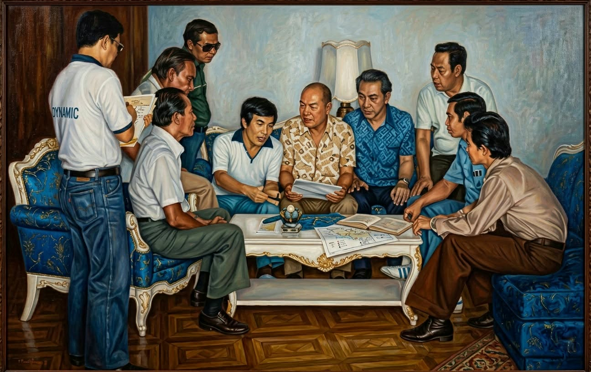

Built by farmers, for farmers—LIMCOMA began as a cooperative solution to rising feed costs, and grew into a multi-service community institution.
Feeds, loans, scholarships, and social programs—working together for a better life.

Quality products, accessible services, and cooperative growth for members and communities.
From humble beginnings to a fully mechanized operation, building capacity through continuous improvement.
Members enjoy loan facilities and support services, including medical services and scholarships.
First ISO 9001 Certified Feedmilling Cooperative since 2002 and recognized with awards for excellence.
A short timeline based on the LIMCOMA history document.
LIMCOMA was organized so farmers could mill their own feeds and supply supplements, founded with 77 incorporators and an authorized capital of ₱1 Million.
The cooperative evolved into LIMCOMA MPC with expanded facilities such as warehouses, corn silos, truckscale, quality control laboratory, and satellite offices.
Since 2002, LIMCOMA stands as the First ISO 9001 Certified Feedmilling Cooperative, recognized for conformance to ISO standards and achievement awards.
LIMCOMA continues supporting livelihoods and social development programs, strengthening members and communities through cooperative action.